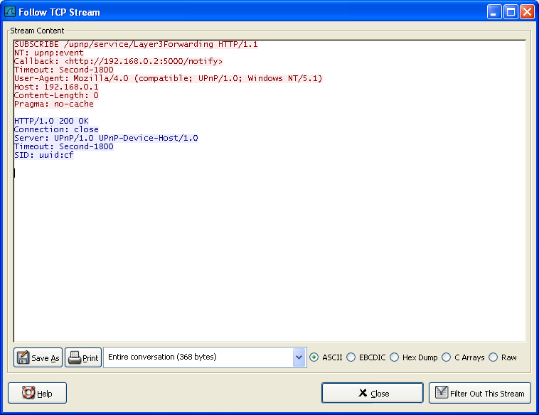
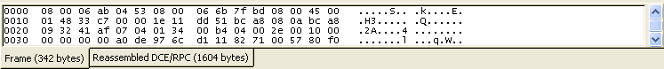

第 7 章 高级
目录
7.1. 说明
在本节将介绍Wireshark的一些高级特性
7.2. "Follow TCP Stream"
如果你处理TCP协议，想要查看Tcp流中的应用层数据，"Following TCP streams"功能将会很有用。如果你项查看telnet流中的密码，或者你想尝试弄明白一个数据流。或者你仅仅只需要一个显示过滤来显示某个TCP流的包。这些都可以通过Wireshark的"Following TCP streams"功能来实现。
在包列表中选择一个你感兴趣的TCP包，然后选择Wireshark工具栏菜单的"Following TCP Streams"选项(或者使用包列表鼠标右键的上下文菜单)。然后，Wireshark就会创建合适的显示过滤器，并弹出一个对话框显示TCP流的所有数据。如图 7.1 “"Follow TCP Stream"对话框”所示
注意
值得注意的是：Follow Tcp Stream会装入一个显示过滤来选择你已经选择的Tcp流的所有包。
7.2.1. "Follow TCP Stream"对话框
图 7.1. "Follow TCP Stream"对话框

流的内容出现的顺序同他们在网络中出现的顺序一致。从A到B的通信标记为红色，从B到A的通信标记为蓝色。当然，如果你喜欢的话你可以从"Edit/Preferences"菜单项的"Colores"修改颜色。
非打印字符将会被显示为圆点。XXX - What about line wrapping (maximum line length) and CRNL conversions?
在捕捉过程中，TCP流不能实时更新。想得到最近的内容需要重新打开对话框。
你可以在此对话框执行如下操作：
Save As 以当前选择格式保存流数据。
Print 以当前选择格式打印流数据。
Direction 选择流的显示方向("Entire conversation", "data from A to B only" or "data from B to A only").
Filter out this stream 应用一个显示过滤，在显示中排除当前选择的TCP流。
Close 关闭当前对话框。移除对当前显示过滤的影响。
你可以用以下格式浏览流数据。
AsCII。在此视图下你可以以ASCII凡是查看数据。当然最适合基于ASCII的协议用，例如HTTP.
EBCDIC。For the big-iron freaks out there.（不知道这句是什么意思， EBCDIC 是IBM公司的字符二进制编码标准。）
HEX Dump. 允许你查看所有数据，可能会占用大量屏幕空间。适合显示二进制协议。
C Arrays. 允许你将流数据导入你自己的C语言程序。
RAW。 允许你载入原始数据到其他应用程序做进一步分析。显示类似与ASCII设置。但“save As”将会保存为二进制文件。
7.3. 时间戳
时间戳，时间戳的精度，等等是在让人感到困惑。本节将向你介绍介绍Wireshark处理时间戳时都发生了什么。
在包被捕捉时，每个包在进入时都被加上时间戳，这个时间戳将会保存在捕捉文件中，所以他们也可以在以后分析时使用。
那么说，时间戳是从哪里来的呢？是捕捉的时候产生的。Wireshark从 libpcap(WinPcap) libraray(库)中获得时间戳。而libpcap(winpcap)又是从操作系统内核获得的时间。如果捕捉数据是从捕捉文件载入的，很显然Wireshark从文件中获得时间戳数据。
7.3.1. Wireshark内置
Wireshak内置的格式使用的时间戳格式由日期(从1.1.1970开始)和时间（从凌晨起，纳秒(10亿分之一秒)为单位）组成。你可以调整Wireshark在包列表的时间戳显示方式。见第 3.7 节 “"View"菜单”的"Time Display Format"项。
当读取或写入捕捉文件时，Wireshark按需要在内置格式和其他捕捉文件格式间进行时间戳转换。
捕捉时，Wireshark使用libpcap(WinPcap)捕捉库（支持纳秒精度）。除非你在专用的捕捉硬件上进行捕捉，一般这样的精度已经足够了。
7.3.2. 捕捉文件格式
Wireshark支持的捕捉文件格式都带有时间戳。不同的捕捉文件格式的时间戳精度有很大不同，从秒"0"到纳秒 "0.123456789"都有。大多数格式捕捉文件存储的时间戳都是固定精度的，些捕捉文件格式甚至存储了时间戳精度本身（可能是出于方便）。
大多数被Wireshark(和或多其他工具)使用的libpcap捕捉文件格式都仅支持固定的百万分之一固定精度"0.123456"
注意
写入数据到一个实际支持精度比你写入数据精度低的格式文件中，可能会导致数据丢失。例如：如果你载入一个纳秒精度的捕捉文件，然后将其存储为libpcap文件(百万分之一秒精度)。Wireshark很明显会将时间精度调整为百万分之一秒。
7.3.3. 准确性
经常有人问："Wireshark的时间戳的准确性如何？"。实际上，Wireshark自身不会创建时间戳，而是通过其他的地方得到时间并显示他们。所以，准确性取决于你实用的捕捉系统(操作系统，性能。。。)。因此以上问题很难通过通常的途径回答。

注意
通常USB连接的网络适配器提供的精度非常差。入口的实际上“占用很长的时间和走很曲折的路”才能穿过USB数据线到系统内核。而数据包只有被系统内核处理过以后才会打上时间戳，这种时间戳机制将会导致准确性大大降低。
结论：如果你需要精确的时间戳，请不要使用USB连接的网卡！(笔者的注脚：有没有网卡在USB硬件上提前加上时间戳的？)[17]
side bar ceshi
[17] 译者注:前文提到，时间戳是Wireshark用库获取的时间加在包上的，不知为何有此一问。难道以后要识别硬件是否有时间戳功能。
7.4. 时区
当你在各地旅行时，会碰到时区的困扰。如果你从其他时区得到捕捉文件，时区问题会给你带来更大的困扰:-)
首先，下面有两个原因说明你为什么完全不需要考虑时区问题：
你仅对两个包的时间戳的差别有兴趣，你并不需要了解捕捉包的实际的日期和时间(通常是这样)。
很可能你不会得到不同与你所在时区的包文件，所以你基本上碰不到时区问题。例如：你的团队的所有都和你工作在一个时区。
表 7.1.
什么是时区?
人们希望时间和日升日落对应。早成应该是6点钟，天黑应该在20：00.这些时间又随着四季变化。如果地球上每个人使用同样的全局时间，将只有一小部分人的日落和时间对应，这将会导致混乱。
因此，人们将地球划分为不同的区域，每个区域都有一个本地时间对应本地的日升日落。
时区基于UTC(Coordinated Universal Time)或者Zulu 时间(军事和航空)。旧有的GTM(格林尼治时间)已不再使用，因为它有少许误差(与UTC相比达到0.9秒)。UTC起始时区等于0(位于格林威治，英格兰)，所有的时区和它的偏在在-12~+14小时之间！
例如：如果你住在柏林，你的时区将比UTC早1小时，所以你的时区应该是"+1"(与UTC时间比较的差别，以小时为单位)。柏林的3点和UTC的两点钟表示同一个时刻。
有些地区要加以注意，因为那里的时区不是用整小时的。(比如：新德里的时区是 UTC+05:30)
更多相关信息见http://en.wikipedia.org/wiki/time_zone和http://en.wikipedia.org/wiki/Coordinated_Universal_Time。
表 7.2.
什么是时DST?
Daylight Saving Time(DST),又称为夏令时，目的是在夏天的几个月里“拯救”白天的时间(夏季白昼较长，如果按照传统的作息时间，比较可惜，不过我不认为)。为了达到这个目的，很多国家（但不是所有的）增加一个DST小时到UTC中。所以你还得加个小时(极少数地方甚至是2小时)的时差来计算你的时区。
不幸的是，DST并未在全世界范围内被启用。你可能同样注意到，北半球和南半球的夏令时是刚好相反的（比如：欧洲是夏季时，澳大利亚则是冬季）。
注意：不管DST怎样，UTC在全年都是一致的。
更多相关信息见http://en.wikipedia.org/wiki/Daylight_saving.
7.4.1. 正确设置你的计算机的时区
7.4.2. Wireshark和时区的关系
7.5. 合并包
7.5.1. 什么是合并包
网络协议经常需要传输较大的数据块，在传输时，底层协议可能不支持这样大的数据块(比如网络包大小的限制)，或者是像像TCP一样的流数据,TCP流完全不知道数据分块情况。(原文为:or is stream-based like TCP, which doesn't know data chunks at all.)
在这种情况下，网络协议必须确定数据块分段的边界，并(如果有必要)将数据块分割为多个包。很明显在接受端也需要有找到数据块分段边界的机制。
提示
在Wireshark里面，这个机制/方法被称为合并/reasembling，在特定协议的描述可能不尽相同(例如：desegmentation, defragmentation, ...)
![[提示]](images/000068.png)
7.5.2. 如何用Wireshark合并包
对那些可以被Wireshark识别的协议，Wireshark通常处理过程为：查找、解码、显示数据块。Wireshark会尝试查找数据块对应的包，在"Packet Bytes"面板的附加页面显示合并以后的数据。(关于“Packet Bytes”面板的详细介绍，见第 4.7 节 “"View"菜单”)
图 7.2. 带有合并包附加选项卡"Packet Bytes面板"

注意
合并可能发生在多个协议层，所以在"Packet Bytes"面板可能会见到多个附加页选项卡
注意
你会在数据块的最后一个包看到合并后的数据。
以HTTP Get应答为例：请求数据(例如一个HTML页面)返回时。Wireshark会显示一个16进制转储数据在"Packet Bytes"面板的一个名为"Uncompressed entity body"新选项卡。
默认情况下，首选项中合并功能被设置为允许。在2005年9月之前默认值是不允许。如果你的首选项是在200年9月之前设置的，你得确认一下，合并包选项的设置。合并包对分析网络包作用非常大。
允许和禁止合并包设置对协议来说还有两项要求。
下层的协议(如：TCP)必须支持合并。通常协议支持合并与否都是通过协议的参数设置的。
高层协议协议(如:HTTP)必须使用合并机制来合并分片的数据。这些也同样可以通过协议参数来允许或禁止。
在设置高层协议的时候tooltip会提醒你同样需要考虑低层的协议设置。
7.6. 名称解析
名字解析尝试将数字地址解析成适合人们阅读格式。有两种方法可以完成这项工作：通过系统/网络服务(例如获取主机名)和/或 Wireshark指定的赋值文件。关于通过赋值文件进行解析的详情，可以参见???
名字解析可以分协议层进行允许，禁止设置。
7.6.1. 名字解析的流弊
名字解析在使用Wireshark时有重要价值，甚至可以节约大量时间。不幸的是，名字解析也有它自己的缺点。
名字解析经常会不可用。服务器可能不知道需要被解析的名字，或者服务器不可用。又或者需要解析的名字在赋值配置文件中找不到。
名字解析并没有存储在捕捉文件或其他什么地方。因此你以后打开捕捉文件或者在其他设备上打开文件有可能发现名字解析不可用。每次打开捕捉文件可能会发现部分地址略微发生变化，也许仅仅是因为无法连接到名字解析服务器(之前还是可以连接的)
DNS可能会增加额外的包到Wireshark中。你会在包文件中看到由Wireshark请求DNS服务生成的包进出你的机器。
解析名称被Wireshark缓存。这对设备性能有一定需求。但是，如果名字解析信息在wireshark运行时发生变化，wireshark不会注意到这个变化，因为它是从缓存进行解析的。如果这些信息在Wireshark运行时变化了，例如获取一个新DHCP租约，Wireshark不会注意到。(这些是针对DNS还是所有信息？有多少机器使用动态dns注册？)
提示
名字解析在包列表填入时已经完成。如果一个包填入包列表以后被解析，包列表的内容不会立即更改，相反解析结果会被缓存，你可以使用"View/Reload"重建包列表，来正确显示名字解析结果。但在捕捉过程中这样做没有效果。
7.6.2. 以太网名字解析(mac层)
尝试将MAC地址(e.g. 00:09:5b:01:02:03)解析为适合阅读的地址（"Human readable"）
ARP名字解析(系统服务) Wireshark会向操作系统发出请求，将以太网地址转换为对应的IP地址(e.g. 00:09:5b:01:02:03->192.168.0.1)
Ethernet codes(ethers file) 如果ARP解析错误，Wireshark会尝试将以太网地址解析为已知设备名。这种解析需要用户指定一个ethers文件为mac地址分配名称。(e.g. 00:09:5b:01:02:03 -> homerouter).
Ethernet manufacturer codes (manuf file) 如果ARP解析和ethers文件都无法成功解析，Wireshark会尝试转换mac地址的前三个字节为厂商名的缩写。mac地址的前三个字节是IEEE为各厂商分配的独立地址(通过前三个字节可以得出每个网络设备的供应商，当然这些也是可以被篡改的。，)(e.g. 00:09:5b:01:02:03 -> Netgear_01:02:03).
7.6.3. IP地址解析(网络层)
将IP地址(e.g. 216.239.37.99)转换为适合阅读的地址/"Human readable"
DNS/ADNS name resolution(system/library service)Wireshark会向操作系统（或ADSN library 地址-名称解析词典?）请求，将IP地址转换为相关联的主机名(e.g. 216.239.37.99 -> www.1.google.com).此时DNS服务正在同步请求DNS服务器，所以Wireshark会停止相应直到DNS请求的响应返回。如果可能的话，你可以考虑使用ADNS library(这样可以避免等待网络相应。)
警告
如果名称解析服务器不可用，允许网络名称解析使Wireshark明显变慢，因为wireshark会等待名字解析结果直到超时。在这种情况你应该使用ADNS。
![[警告]](images/000057.png)
DNS vs. ADNS 这里是一个简短的对比：两个都是用来转换ip地址为其他易读的地址"Human readable"(域名)。通常DNS用gethostname()将地址转换为名称。通常首先是查询hosts文件(e.g. /etc/hosts,/windows/system32/drivers/etc/hosts)看能否找到匹配实体。如果找不到，会向指定的DNS服务器查询。
DNS和ADNS真正的区别在于等待DNS服务器名字解析。gethost()会一直等待知道名字被解析或者返回错误。如果DNS服务器不可用，可能会占用很长时间(好几秒)。ADNS服务会略微有点不同。它也同样向DNS服务器发出请求，但不会等待服务器应答。它会立即相应Wireshark。此时的地址（和后续地址）在ADNS得到结果前不会显示解析名称。如前文书中说道，解析结果被保存在缓存中，你需要使用"View/Reload"菜单更新这些字段来显示解析名称。
hosts name resolution(hosts file) 如果dns解析不成功，Wireshark会尝试使用用户提供的主机文件将IP地址转换为对应的主机名。(e.g. 216.239.37.99 -> www.google.com)
7.6.4. IPX名称解析(网络层)
ipxnet name resolution (ipxnets file) (笔者未作解释)
7.6.5. TCP/UDP端口名解析(传输层)
翻译TCP/UDP端口(e.g.80)为更加易读的玩意"human readable"[15]
TCP/UDP port conversion (system service) Wireshark会向操作系统发出请求，转换TCP/UDP端口为已知名称(e.g. 80->http)。
XXX - mention the role of the /etc/services file (but don't forget the files and folders section)!
[15] 应该是指将端口翻译为服务名
7.7. 校检和
很多协议使用校检和来验证数据的完整性/正确性。
提示
应用校检和在这里也被成为redundancy check(冗余校检？)
校检和是做什么的？
校验和是用来验证传输数据或存储数据的数据部分的正确性。一个检验和是数据部分进行摘要计算的出的数字。
网络数据在传输过程中经常会产生错误，例如数据错误，字节重复等。数据接收方可能。
正因为传输过程中会伴随错误，网络协议会经常使用校验和检测这些错误。发送方会对数据进行检验和计算，并将数据和检验和一起发送。接收方使用同样的方法计算数据部分的校验和，如果收到的校验和计算出来的校验和不匹配，就表示数据有错误。
有些校验和方法可以通过计算得出发生需要被修复错误的数据位置，并修复（简单的）错误。
如果那些错误无法修复，接收方会丢弃错误的数据包。根据协议的不同，数据丢失会仅仅被丢弃，也有可能发送端会根据数据丢失情况重传需要的数据包。
使用校验和可以大量减少传输错误数量。但任何检验和算法都无法确保100%检测到所有错误，依然有少量的错误会无法被检测到。
校验和的算法有很多，例如最经常被使用的检验和算法CRC32（循环冗余校验）。特的的网络协议选择的校验算法取决于希望网络媒介达到的出错率上限、错误检测的重要性，处理载入计算的性能，其他方面需要的性能。
关于检验和的更多信息可以参考：http://en.wikipedia.org/wiki/Checksum
7.7.1. Wireshark校检和验证
Wireshark会对很多协议进行检验和验证，如：TCP、IP。。。
它会和"normal receiver"做一样的计算.然后在包详情面板显示检验和字段的内容，e.g.:[correct], [invalid, must be 0x12345678] 以及其他类似的内容。
如果校验和验证选项被打开或正在进行校验和检测，合并包特性不会被执行。这是为了避免错误的的连接数据扰乱内部数据。
7.7.2. Checksum offloading
检验和计算可能由网络网络驱动，协议驱动，甚至是硬件完成。
例如：以太网传输硬件计算以太网循环容易校验，接受硬件验证这个校验。如果接受验证发现错误，Wireshark将不会接收到这个包，以太网硬件会直接丢弃这个包。
高层校验通常是由协议执行，并将完成后的包转交给硬件。
比较新的网络硬件可以执行一些高级功能，如IP检验和计算，这被成为checksum offloading。网络驱动不会计算校验和，只是简单将校验和字段留空或填入无效信息，交给硬件计算。
注意
checksum offloading经常会导致混乱，因为网络包在检验和计算之前转交给Wireshark。Wireshark得到包的检验和字段是空的，必然会显示检验和错误，尽管这个包在从网络硬件发出的时候是带有校验和的。
Checksum offloading会引起混淆，让你屏幕上看到大量的[invalid]信息，引起你的反感。前面提到过，错误的检验和会导致包无法合并，更难进行包数据分析。
你可以采取两种方法避免Checksum offloading 问题
在驱动程序上关闭checksum offloading选项，如果可用的话。[16]
通过首选项关闭Wireshark上特定协议的校验和验证。
[16] 在Windows平台如果驱动支持，应该是计算机管理->设备管理器->网络适配器->对应网卡的属性-高级选项